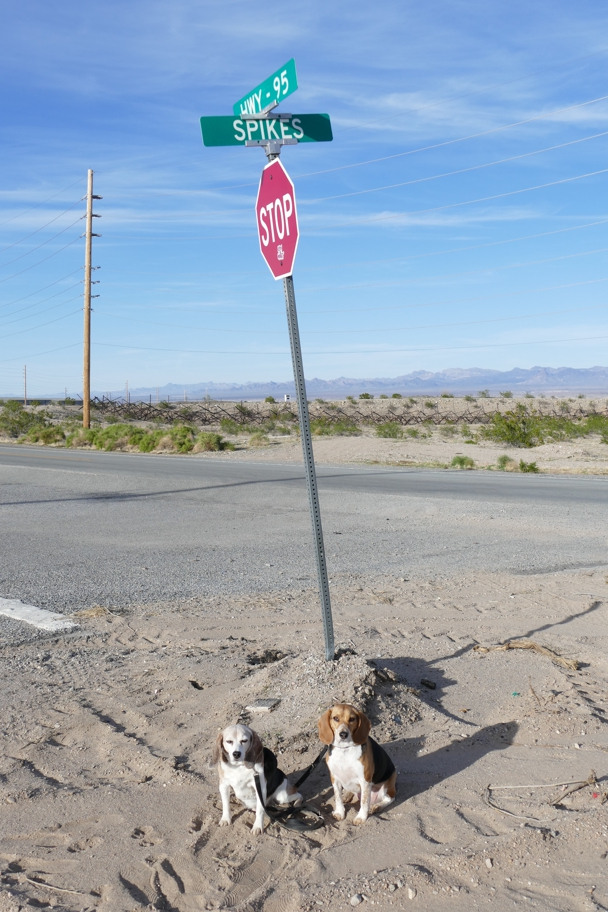

<--Previous Up Next-->

In the Peanuts comic strip, Snoopy's brother Spike lives in Needles, CA. We stopped to see if there was any evidence of him. Sure enough, here was this street on the way in to town.
California Halley Beagle Needles Wallace Beagle